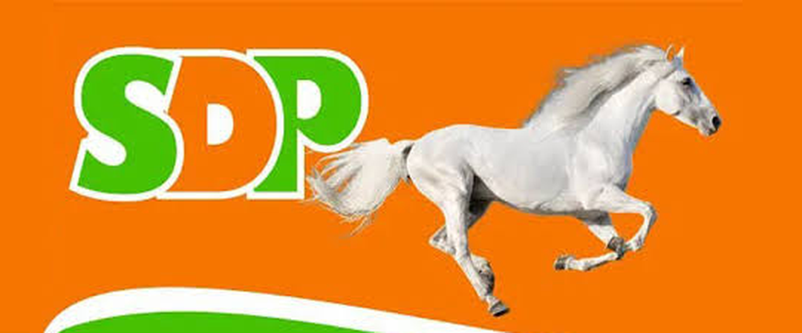

Running for the House of Representatives, Akwanga/Nasarawa Eggon/WambaMake the Right Choice. Vote for Continuity and Progress.
Mp. Jeremiah Umaru ACA, ACTI, Ph.D. is representing Akwanga, Nasarawa Eggon and Wamba in the 10th National Assembly. Here is what his office has delivered.
What his office has delivered
Over 69 young people now hold permanent and pensionable jobs secured through his office.
Permanent and pensionable means steady pay now and a pension later.
- 321
youths and women empowered in his first 100 days in office
Empowerment, 2023 - 100+
widows and other vulnerable women trained in entrepreneurship skills
Empowerment - 101
students given scholarships across higher institutions
Education, 2023 - 350
students had their UTME registration fees paid
Education, 2024 - 100
primary and secondary school teachers trained across all 35 wards
Education, 2025 - 220
farmers trained on storage techniques to cut post-harvest losses
Agriculture, 2026 - 3
communities given 300KVA transformers
Power, 2023 - 10
bills sponsored and seven motions moved in his first eight months
Legislation
Figures come from published reports of his programmes. The employment figure was supplied by the campaign.
A chartered accountant overseeing public accounts
Mp. Jeremiah Umaru, ACA, ACTI, Ph.D., popularly known as JJ Umaru, is a Nigerian chartered accountant and a member of the House of Representatives. He is representing the Akwanga/Nasarawa Eggon/Wamba Federal Constituency of Nasarawa State in the 10th National Assembly and is serving as Deputy Chairman of the House Committee on Public Accounts.
Alongside public service, he manages a private agribusiness and logistics company, and he has named agriculture a top priority for his constituency. In the House, he has proposed a constitutional amendment to create a new constituency in Nasarawa North.
Read the full biography on Wikipedia- Seat
- Akwanga/Nasarawa Eggon/Wamba Federal Constituency
- Committee
- Deputy Chairman, House Committee on Public Accounts
- Qualifications
- ACA, ACTI, Ph.D. in Business Administration
- Degrees from
- University of Jos and Nasarawa State University
- Business
- Agribusiness and logistics
Make your supporter poster
Create a clean, personalised supporter poster in seconds. Your photo stays on your device.